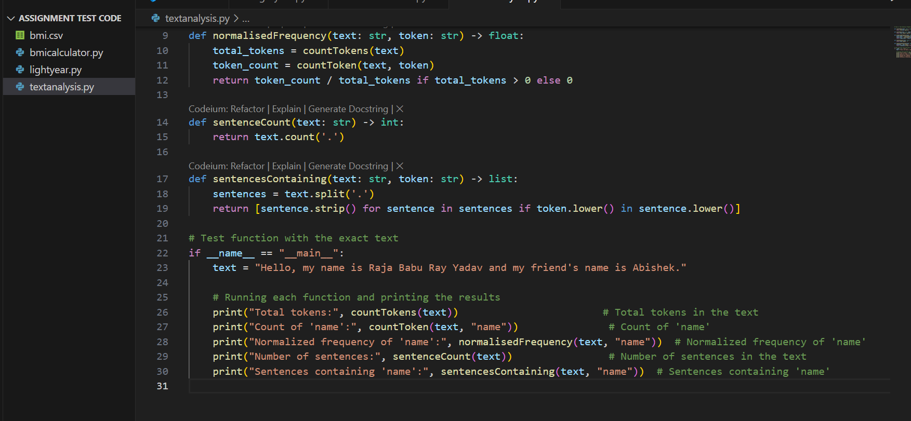
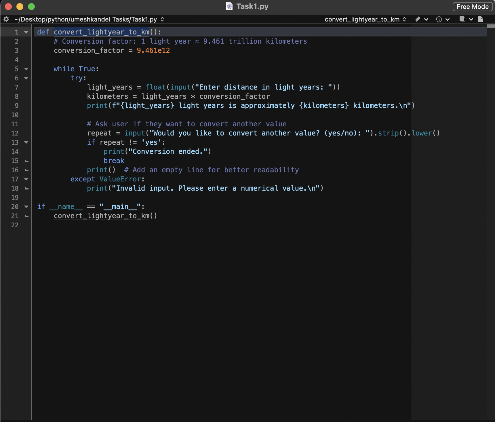

My Projects
Here are some of my recent projects. Each project demonstrates different skills and technologies.

Book Ordering Application
A graphical user interface application built with Python and Tkinter for managing book orders. Features include order processing, inventory management, and user-friendly interface.

Word Count Program
A Python program that analyzes text files to count words, characters, and sentences. Includes features for frequency analysis and text statistics.

Lightyear Conversion Calculator
An interactive program that converts lightyears to other astronomical units. Helps users understand cosmic distances through simple conversions.

BMI Calculator
A Python program that calculates Body Mass Index (BMI) based on user input for height and weight. Provides health category classification and personalized recommendations.